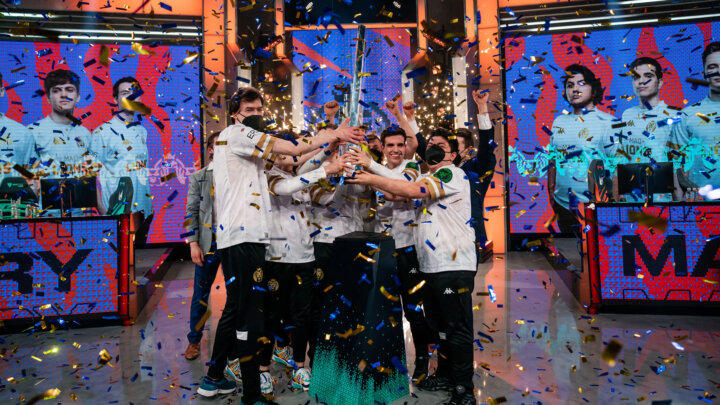

Looking back on the LEC Spring Split 2021 – The end of a dynasty
History has been written as Europe has crowned a new king in the League of Legends European Championship in the form of MAD Lions.
It was bound to happen after G2 Esports were eliminated in the semi-finals. Against all expectations it were the rookies that rose to conquer Europe this split. This brings a lot of hope to a region that consists of smaller European Regional Leagues. Seven out of ten players in the final this year came straight out of the ERL-ecosystem. Motivating every player currently playing there.
It was an action-packed weekend with important League of Legends all over the world, with the Korean finals, Chinese play-offs, North American finals and many more regions playing their last matches to crown a champion. This champion will represent the region at the Mid-Seasonal Invitational. With the semi-final and final still left in Europe, we too had an action-packed weekend full of surprises. Saturday, we began with G2 Esports trying to overcome Rogue to defend their title against MAD Lions in the final. However, things turned out different.
What happened before the final weekend
Both G2 Esports and Rogue were on top of the league the whole split. They were also projected to play the final of the LEC as they looked far above all the other competing teams. Coming into play-offs things went a bit different however. Rogue fell exceedingly early on to MAD Lions who just outdrafted and outsmarted their way through the series. Rogue made way too many mistakes and MAD Lions were able to punish them. The same thing happened to G2 Esports, as they too got clapped by MAD Lions with a 1-3 scoreline. Now Rogue and G2 Esports faced each other, but only one can get their revenge on MAD Lions.
The end of a dynasty
There have only been three teams to win the LEC title, with Alliance winning one and all the others are shared by Fnatic and G2 Esports. With only G2 Esports still being in the running, they had to win to not only defend their title but their dynasty as kings of Europe. Nevertheless, they faced a super motivated Rogue with Odoamne in the toplane who has been trying his hardest to reach a final for seven years. His hard work paid off as they finally overcame their demons and closed out their 2-1 lead against G2 Esports. They won the series three games to one and ended Europe’s long-lasting dynasty of G2 Esports and Fnatic sharing the title.
Finals filled with rookies
With Rogue winning over G2 Esports, they will challenge MAD Lions for the title in the LEC final. MAD Lions were the favorite, but Rogue showed they learned a lot from the previous series in the play-offs. They exceeded all expectations by taking the first two games. Although the second game was much closer, Rogue were still able to close it out. For a second it looked like it would be a clean 3-0 sweep for Rogue but that is when the lions woke up. Armut looked deep into the player-camera and showed the numbers two and three, hinting it would go to five games and a reverse sweep.
They had to change some things up in the draft and with being 0-2 behind, MAD Lions did not have a lot of room for error. MAD Lions drafted a more topside focused team composition getting Armut on his signature Wukong pick. This is what eventually turned the tides and MAD Lions were able to win two consecutive games tying the series 2-2.
One. More. Game.
With both teams having two wins, the last game was the most important one of their careers yet. Rogue have shown they could beat MAD Lions in the teamfights and punish their missteps whereas MAD Lions showed they can create an early game lead against Rogue. They had both figured each other out so adaptation was the only thing keeping these teams in the series. In the final game, Rogue had the lead, but it was MAD Lions creating chaotic teamfights and they pulled the game back in their favor. After one last teamfight around the baron, choking out Rogue, they finally did it. They beat Rogue and rushed down the midlane to end the game and crown themselves the new champions of Europe.
It was an emotional rollercoaster and a lot of European fans were surprised after the final LEC playoffs weekend. However, everybody feels happy for the MAD Lions and the rookies of both teams for reaching the finals. We do feel sad about Odoamne not making it, but we keep our eyes on MSI 2021 now. Where we will see MAD Lions defending the European honor of the third best region worldwide.